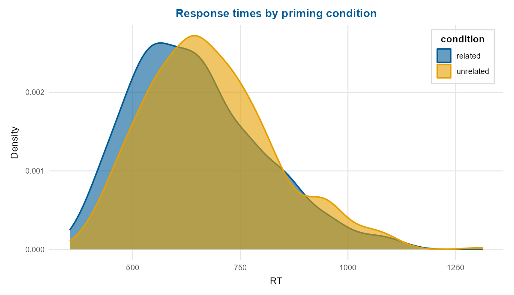
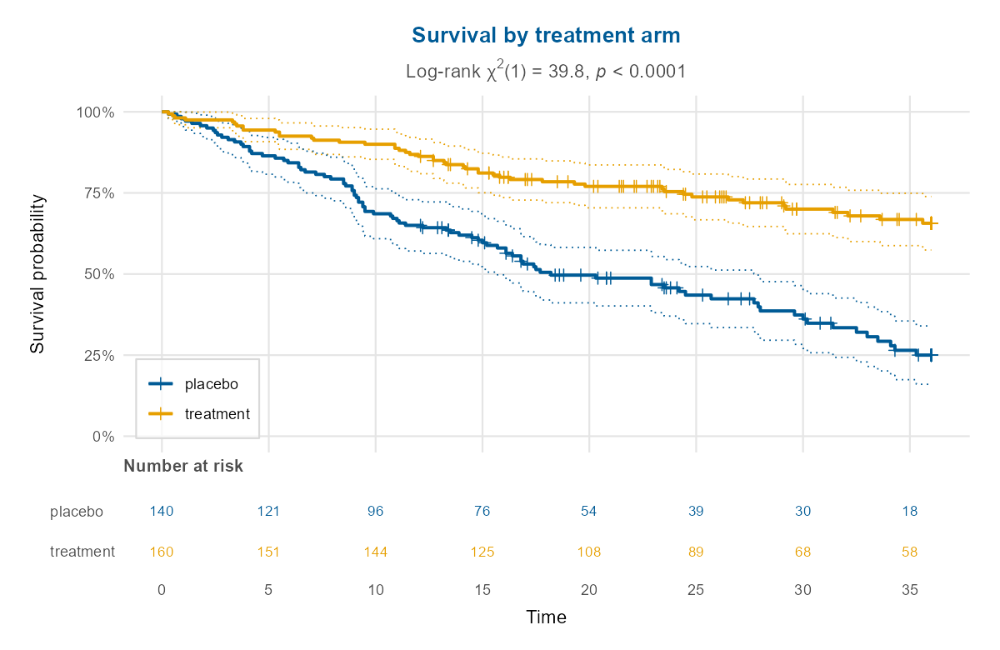

depictr is a single, consistent toolkit of publication-ready plots that span the whole analysis workflow, from a first look at the data, through model estimates and predictions, to diagnostics, uncertainty and reporting. Most packages address one part of this work; depictr aims to cover it from end to end with one theme, one palette and one set of label conventions. Every plotting function returns a ggplot2 object (or a patchwork for composite panels), so a plot can be refined further with the usual + syntax.
A Python sibling, depictr-py, mirrors the same design.
Gallery
A grouped density (the default palette is a colourblind-safe set based on Okabe-Ito) and Kaplan-Meier survival curves with confidence bands and a number-at-risk table, each from a single function call:


What’s in the box
The functions fall into seven families that follow the analysis workflow. Exploratory plots and a descriptive summary table open it. The model-estimate views come next (forest plots, model comparison, predictions, interactions and random effects), then residual diagnostics with the standard classification curves, and then posterior summaries and power curves. Further families cover principal components, clustering and survival, time series, and the shared theme with composition, saving and reporting helpers. The reference lists every function by family.
Heavier modelling back-ends (lme4, broom, simr) are optional (in Suggests) and used only when present; the core functions, examples, tests and vignettes run on base lm/glm and the bundled data alone.
A first plot
library(depictr)
fit <- lm(yield ~ rainfall + fertiliser + soil_ph + treatment, data = crop_yield)
coefficient_plot(fit, order = "descending")The Get started article walks through the whole workflow, from exploration to diagnostics and reporting.
Bundled data
Five reproducibly simulated datasets (lexical_decision, wellbeing_survey, crop_yield, clinical_trial and monthly_sales) ship with the package and power every example and vignette. Each is documented under its own name and described in the Get started article, and all are generated by data-raw/generate_datasets.R with fixed seeds.
Learn more
-
vignette("depictr"): getting started -
vignette("exploring-data"): exploratory plots, estimation statistics and tables -
vignette("model-estimates"): estimates, comparison, predictions, random effects, and Bayesian posteriors -
vignette("diagnostics-and-uncertainty"): diagnostics, classification, posteriors, power -
vignette("multivariate-and-survival"): PCA, clustering with diagnostics, survival curves -
vignette("time-series"): trends, autocorrelation, decomposition, seasonality and forecasts
How depictr relates to other packages
depictr aims for breadth and consistency across the workflow, and complements the specialised packages rather than replacing them. For a deeper treatment of any one area, several remain valuable, among them ggstatsplot (statistical details on plots), sjPlot and the easystats family (see, parameters, performance), marginaleffects / ggeffects (predictions), GGally (pairs), factoextra (PCA and clustering), survminer (survival), feasts / ggfortify (time series), ggdist / dabestr (distributions and estimation) and bayesplot / tidybayes (Bayesian). depictr offers one consistent default for all of these tasks within a single package.
Automated maintenance
depictr draws on a number of plotting and modelling packages, so several scheduled GitHub Actions keep it healthy between releases:
-
dependency-checkruns daily, checking the package and its full test suite against both the current and the development versions of its dependencies, so a breaking change in any dependency is caught within a day. On failure it opens, and keeps updated, a single tracking issue. -
dependency-autofixruns wheneverdependency-checkfails: it asks Claude Code to find the smallest change that restores compatibility and to open a pull request, falling back to a comment on the tracking issue when no safe automated fix exists. It is inert until aCLAUDE_CODE_OAUTH_TOKENsecret is added to the repository. Generate it withclaude setup-token(it uses your Claude subscription, not billable API credits) and enable Settings → Actions → General → Allow GitHub Actions to create and approve pull requests. -
link-checkruns weekly, validating every URL in the DESCRIPTION, README, help pages and vignettes withurlchecker, and opening a tracking issue if a link breaks or starts redirecting (both of which CRAN flags). -
R-CMD-checkruns on every push and pull request across Linux, macOS and Windows (R release, development and previous release).
Each scheduled workflow can also be run on demand from the repository’s Actions tab.
Citing depictr
citation("depictr") gives the preferred reference. The methods the package implements are cited in the relevant help pages and vignettes, drawing on a single bibliography at inst/REFERENCES.bib.
Licence
MIT (c) Pablo Bernabeu. See the licence.